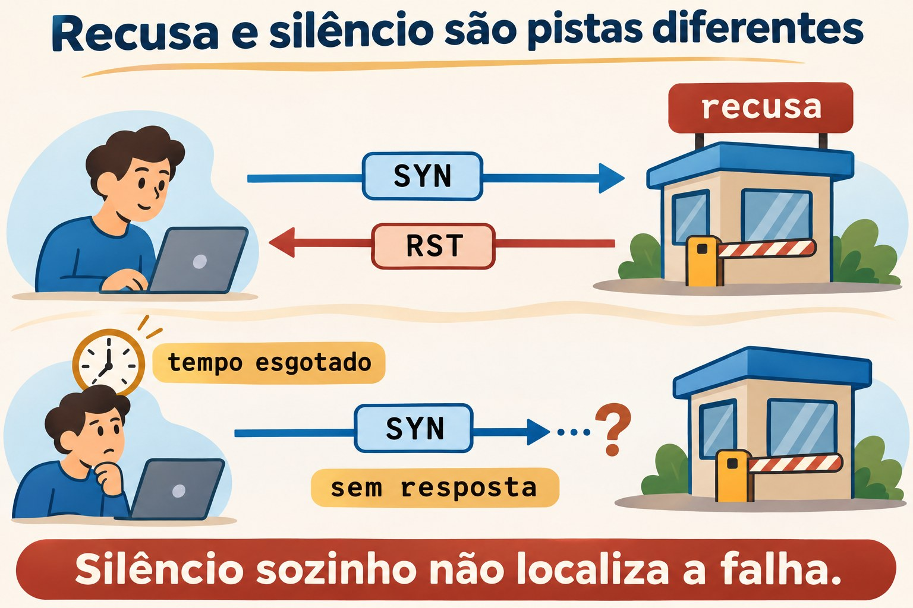
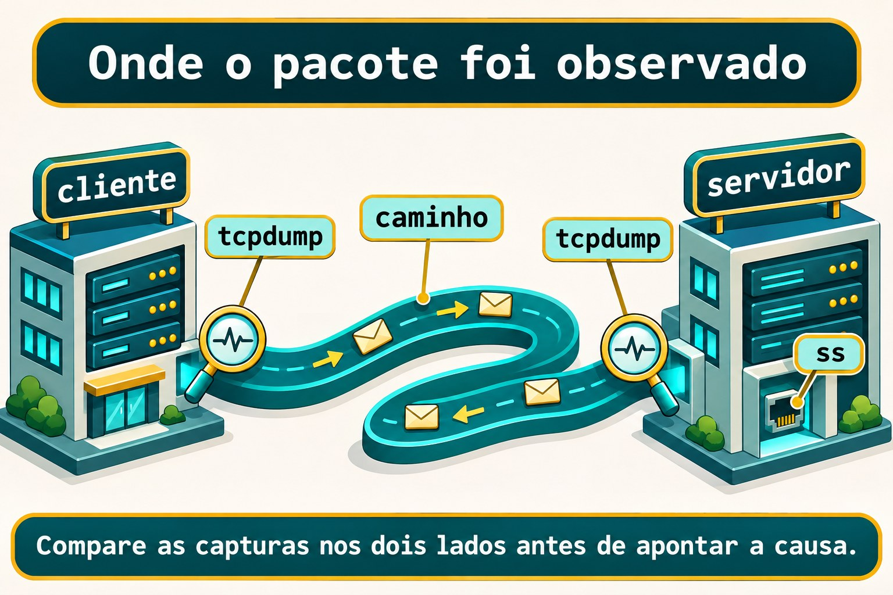

Aula 11.5 · Diagnóstico de rede
No Windows Server, você separa resolução, caminho e porta antes de culpar a rede inteira. No Linux, vai fazer o mesmo com ferramentas pequenas e evidências que se completam. Esta aula fecha o módulo: você observa uma conexão, planta falhas controladas e comprova uma configuração persistente com IPv4 e IPv6.
Núcleo desta aula: teste nome, rota, porta e aplicação separadamente. Capture nos pontos certos e limite sua conclusão ao que observou. O resto é aprofundamento.
| Ficha | |
|---|---|
| Módulo | M11 · Rede, aula 5 de 5 |
| Quando | Semana 17 |
| Ao final | Você distingue falha de resolução, recusa TCP e ausência de resposta; registra evidências antes de corrigir |
| Pré-requisitos | Aulas 11.1 a 11.4; usuário student, sudo, SSH e noVNC nas duas VMs |
| Tempo | Cerca de 90 minutos, mais uma sessão para o desafio |
| Snapshots | m11a5-inicio e m11a5-fim nas VMs 201 e 202 |
1 · Aquecimento
Responda sem consultar. As respostas comentadas ficam no fim.
- Qual é a diferença entre endereço configurado, perfil salvo e rota escolhida?
- Por que
getentedigpodem responder de maneiras diferentes para o mesmo nome? - Por que trocar o IP pela própria sessão SSH exige um console ou plano de volta?
2 · Por que importa
A aplicação não abre. O ping responde e alguém conclui que o problema está no navegador. Você olha o socket: o processo escuta apenas no loopback. O endereço da VM responde, mas aquela porta não atende pela interface da rede.
Seu relatório precisa dizer qual destino, família IP, porta e horário foram testados. “A rede está boa” não descreve o que foi verificado.
| Observação | Conclusão útil |
|---|---|
| Nome vira o IP esperado | A resolução usada neste teste respondeu |
| Conexão TCP abre | O estabelecimento TCP funcionou nessa porta |
| HTTP retorna o conteúdo esperado | A aplicação respondeu à requisição testada |
3 · Modelo mental
Pense no prédio do curso. O catálogo informa o endereço; a planta indica o caminho; a portaria recebe a conexão; o setor interno presta o serviço. Encontrar a rua não significa ser atendido pelo setor.
nome -> endereço -> rota -> porta TCP -> resposta da aplicação
| | | |
getent ip route nc curl
DNS: dig sockets: ss
observação de pacotes: tcpdump
Ponte Windows
| Windows Server | Linux | Pergunta |
|---|---|---|
Resolve-DnsName | dig | O servidor DNS respondeu o quê? |
Test-NetConnection | nc e ip route get | Porta TCP e caminho escolhido |
Get-NetTCPConnection | ss | Quem escuta e em qual endereço? |
| Captura de pacotes | tcpdump | O que passou neste ponto? |
4 · O essencial
Nome, família e rota
Comece pelo destino exato. Force IPv4 ou IPv6 quando a hipótese envolver uma família. Um endereço IPv6 local funcionando não demonstra que existe uma rota IPv6 até a internet.
getent ahostsv4 debian-lab
ip -4 route get 10.1.0.52
ip -6 route get ::1O primeiro comando usa NSS. O segundo consulta a decisão de encaminhamento do kernel e não envia uma sonda. Confira destino, origem escolhida e interface.
ICMP e caminho
ping testa respostas ICMP. tracepath usa sondas UDP e respostas do caminho para mostrar saltos e informações de MTU. Um salto silencioso não identifica sozinho onde o tráfego da aplicação parou.
ping -4 -n -c 3 -W 1 10.1.0.52
tracepath -4 -n -m 5 10.1.0.52Porta não é aplicação
nc -vz tenta estabelecer TCP sem enviar uma requisição da aplicação. Um socket em escuta aparece em ss -lntp; a opção de processo exige privilégio para mostrar processos de outros usuários.
Uma recusa TCP indica uma rejeição ativa, normalmente um RST. Tempo esgotado indica que o teste não recebeu a resposta necessária dentro do prazo. A origem precisa da rejeição ou do silêncio exige mais evidências.


DNS sem atalhos na interpretação
dig consulta DNS; não lê /etc/hosts como fonte de nomes. Leia o status, o servidor consultado e a resposta. NOERROR com resposta vazia difere de NXDOMAIN; nenhuma dessas respostas equivale a ausência de comunicação com o servidor.
dig -r +time=2 +tries=1 . NSO ponto representa a raiz do DNS. O comando usa os servidores configurados; -r ignora ajustes pessoais de dig. Não esconda o status com uma consulta que mostre apenas a resposta curta.
Captura é um ponto de observação
Escolha a interface, o filtro e a duração. -nn evita resolver nomes e portas; -p evita modo promíscuo. Uma captura no cliente mostra o que foi observado ali, não o que o servidor recebeu.


Rocky × Debian
| Item | Rocky 9 | Debian 13 |
|---|---|---|
nc desta aula | Pacote nmap-ncat | Pacote netcat-openbsd |
dig | bind-utils | bind9-dnsutils |
tracepath | iputils | iputils-tracepath |
| Captura | tcpdump | tcpdump |
| Gerenciador | NetworkManager | O identificado na 11.3 |
5 · Lab guiado
Faça os testes locais nas duas VMs. Use três terminais identificados: A para o servidor temporário, B para os testes e C para a captura. O serviço HTTP fica no loopback e não exige abrir firewall.
Passo 1 · Preparar e proteger
Palpite: o snapshot instala ferramentas ou apenas registra o estado atual da VM?
No host Proxmox, nunca dentro das VMs:
qm snapshot 201 m11a5-inicio
qm snapshot 202 m11a5-inicioNa Rocky, instale as ferramentas. Na Debian, use o segundo bloco.
sudo dnf install -y iputils iproute bind-utils nmap-ncat tcpdump python3 curlsudo apt update
sudo apt install -y iputils-ping iputils-tracepath iproute2 bind9-dnsutils netcat-openbsd tcpdump python3 curlSaída esperada: snapshots criados e pacotes instalados sem erro.
Verifique: no host, confira qm listsnapshot 201 e qm listsnapshot 202. Nas VMs, confira command -v ping tracepath ss dig nc tcpdump python3 curl.
Passo 2 · Registrar o ponto de partida
Palpite: enxergar uma rota na tabela comprova que o outro lado respondeu?
No terminal B, escolha o IP da outra VM: na Rocky use o primeiro valor; na Debian use o segundo. Execute apenas uma atribuição.
ALVO=10.1.0.52ALVO=10.1.0.51Antes de criar a pasta, confirme que ela não existe. Se existir, guarde os registros antigos em outro local e escolha uma sessão limpa.
test ! -e "$HOME/m11a5"
mkdir -m 700 "$HOME/m11a5"
ip -br address | tee "$HOME/m11a5/address.inicio"
ip -4 route get "$ALVO"
sudo ss -lntp 'sport = :18085'
sudo ss -lnup 'sport = :53'Saída esperada: rota para a outra VM e nenhuma escuta TCP na porta 18085. Anote se existe DNS local na porta 53; o teste de DNS quebrado exige que 127.0.0.2:53 esteja livre.
Verifique: se aparecer escuta em 18085, pare este preparo e escolha um lab sem esse serviço. Uma escuta UDP em 0.0.0.0:53 também ocupa o endereço reservado ao defeito.
Passo 3 · Comparar TCP com HTTP
Palpite: uma conexão TCP que abre já leu o arquivo da aplicação?
No terminal A de cada VM, crie o conteúdo e deixe o processo em primeiro plano.
mkdir "$HOME/m11a5/www"
printf 'NETWORK ok\n' > "$HOME/m11a5/www/index.html"
python3 -m http.server 18085 --bind 127.0.0.1 --directory "$HOME/m11a5/www"No terminal B:
sudo ss -lntp 'sport = :18085'
nc -4 -vz -w 2 127.0.0.1 18085
curl --noproxy '*' -4 --connect-timeout 2 --max-time 4 -fsS http://127.0.0.1:18085/Saída esperada: escuta em 127.0.0.1:18085, conexão TCP aceita e conteúdo NETWORK ok no HTTP. As mensagens de nc diferem entre as distros.
Verifique: compare o log do terminal A. O teste nc abre TCP; o teste curl envia uma requisição HTTP e lê a resposta.
Decida 1
O ping responde, mas o serviço não abre. Qual teste separa melhor porta de aplicação?
| Opção | Ação |
|---|---|
| A | Repetir o ping mais cem vezes |
| B | Testar a porta com nc e depois o protocolo com curl |
| C | Trocar o gateway imediatamente |
Escolha B. O objetivo é obter uma evidência nova, sem mudar a rede antes de localizar a falha.
Passo 4 · Observar a outra VM
Palpite: se ICMP ficar sem resposta, a porta SSH necessariamente estará indisponível?
No terminal B, mantenha ALVO definido para a outra VM.
ping -4 -n -c 3 -W 1 "$ALVO"
timeout 12 tracepath -4 -n -m 5 "$ALVO"
nc -4 -vz -w 2 "$ALVO" 22Saída esperada: no lab com SSH operacional, a porta 22 aceita a conexão. Registre o resultado real de ICMP e dos saltos; não invente tempos nem trate um salto silencioso como prova de bloqueio. Do Debian para a Rocky, o tracepath pode marcar !H: o firewalld da Rocky rejeita as sondas UDP, mas o destino foi alcançado.
Verifique: abra uma nova sessão ssh rocky-lab ou ssh debian-lab a partir do Windows. O teste TCP não verificou autenticação nem execução de comandos.
Passo 5 · Ler uma resposta DNS
Palpite: uma resposta DNS negativa e um servidor sem resposta são o mesmo incidente?
cat /etc/resolv.conf
dig -r +time=2 +tries=1 . NS
getent ahostsv4 localhostSaída esperada: a consulta DNS mostra o servidor e o resultado real da rede do lab. A consulta local encontra IPv4 de loopback por NSS. Se DNS já falhar, registre a falha como condição inicial antes de plantar outro defeito.
Verifique: identifique no resultado de dig o status e o servidor. Escreva se houve resposta DNS ou falha de comunicação, sem confundir esses dois casos.
Passo 6 · Capturar uma transação pequena
Palpite: o filtro por porta HTTP vai capturar todas as sessões SSH da VM?
No terminal C, execute a captura. No B, rode o curl do passo 3 enquanto ela estiver ativa. A captura sai pela saída padrão; o shell de student abre o arquivo privado, evitando depender da permissão do usuário para o qual o capturador reduz seus privilégios.
sudo timeout 15 tcpdump -i lo -nn -p -s 96 -c 20 -w - 'tcp port 18085' > "$HOME/m11a5/http.pcap"Depois, no B:
sudo tcpdump -nn -r "$HOME/m11a5/http.pcap"Saída esperada: pacotes TCP locais com a porta 18085. A captura termina por limite de pacotes ou de tempo; timeout retorna 124 quando encerra pelo prazo.
Verifique: encontre o início com SYN e SYN/ACK, indicado normalmente por [S] e [S.]. O recorte de 96 bytes serve para este cabeçalho local; não é uma captura integral do conteúdo HTTP.
Decida 2
Na rede entre as VMs, você viu SYN sair do cliente, mas não observou resposta. O que fazer?
| Opção | Ação |
|---|---|
| A | Declarar que o firewall do servidor bloqueou |
| B | Comparar captura no destino e socket em escuta |
| C | Desligar a proteção do host |
Escolha B. Para repetir o teste SSH, capture por poucos segundos em cada VM com filtro host 10.1.0.51 and host 10.1.0.52 and tcp port 22, usando a interface mostrada por ip route get. Capture apenas no seu lab.
6 · Quebre e conserte
Quebra 1 · Porta sem ouvinte
No terminal A, encerre apenas o servidor temporário com Ctrl+C.
Sintoma: nc e HTTP falham no mesmo endereço que funcionava.
Investigação: compare ICMP, socket e tentativa TCP no terminal B.
ping -4 -n -c 1 127.0.0.1
sudo ss -lntp 'sport = :18085'
nc -4 -vz -w 2 127.0.0.1 18085Causa: o IP local funciona, mas o processo deixou de escutar. No loopback normal deste lab, a porta fechada recebe recusa imediata.
Conserto: no A, execute novamente o servidor HTTP do passo 3.
Verifique: repita o curl local e obtenha NETWORK ok.
Prevenção: monitore a porta e o protocolo esperado, além da presença do host.
Quebra 2 · Família errada
Mantenha o servidor ligado apenas em IPv4 e tente IPv6.
Sintoma: IPv4 entrega a página, mas a tentativa para ::1 falha.
Investigação: confira o endereço exato do socket.
ping -6 -n -c 1 ::1
sudo ss -lntp 'sport = :18085'
nc -6 -vz -w 2 ::1 18085Causa: o servidor foi vinculado a 127.0.0.1; isso não cria uma escuta em ::1.
Conserto: encerre o servidor com Ctrl+C no A e inicie a escuta IPv6 local.
python3 -m http.server 18085 --bind ::1 --directory "$HOME/m11a5/www"Verifique: no B, execute os dois testes abaixo.
nc -6 -vz -w 2 ::1 18085
curl --noproxy '*' -6 --connect-timeout 2 --max-time 4 -fsS 'http://[::1]:18085/'Prevenção: anote família, endereço de escuta e porta como parte da configuração do serviço.
Quebra 3 · Consultar o DNS errado
Sintoma: a consulta explícita abaixo falha, embora a consulta DNS do passo 5 tenha respondido. Só faça esta comparação após obter a resposta normal de referência. Este defeito afeta apenas o comando, sem editar a configuração global.
Investigação: confirme a ausência de escuta em 127.0.0.2:53, depois compare as consultas.
dig -r @127.0.0.2 +time=1 +tries=1 . NS
dig -r +time=2 +tries=1 . NSCausa: a primeira consulta escolheu um endereço sem servidor DNS. A segunda voltou à configuração normal. A mensagem exata da falha varia entre versões: o dig da Rocky informa tempo esgotado, enquanto o do Debian informa recusa. Leia o status do comando, não só a frase.
Conserto: retire o servidor explícito incorreto do comando. Não altere /etc/hosts para esconder a falha.
Verifique: a consulta normal deve voltar ao resultado de referência anotado no passo 5.
Prevenção: registre o servidor realmente consultado junto com a resposta DNS.
Limpeza
Encerre o servidor temporário com Ctrl+C no A. As capturas já terminam por tempo ou contagem; guarde a pasta privada como registro. Nenhum arquivo global de rede foi modificado no lab guiado.
sudo ss -lntp 'sport = :18085'
ip -br addressCompare os endereços com address.inicio. O desafio abaixo cria e remove apenas uma interface de exercício, sem trocar o endereço usado pelo SSH.
7 · Armadilhas
| Erro comum | O que fazer | Por quê |
|---|---|---|
| Ping respondeu, aplicação está boa | Testar TCP e o protocolo | ICMP não verifica HTTP |
| Um salto não respondeu, ali está o defeito | Comparar o tráfego real nos dois lados | Sondas e aplicação usam tráfegos diferentes |
| Capturar tudo indefinidamente | Limitar interface, filtro e duração | Reduz exposição e facilita a análise |
Procurar DNS com dig e esperar ler hosts | Comparar DNS e NSS separadamente | As fontes consultadas são diferentes |
Usar um glob protegido antes de sudo | Deixar o programa privilegiado selecionar os arquivos | O shell comum expande o glob antes |
8 · Quiz
- Um
ncTCP aceito comprova que o login SSH foi autorizado? - Qual teste mostra uma decisão de rota sem enviar uma sonda?
- Como diferenciar uma resposta DNS negativa de ausência de resposta DNS?
- SYN observado apenas no cliente comprova que o servidor o recebeu?
- Uma escuta em
127.0.0.1atende automaticamente::1? - Por que confirmar a configuração depois do reboot?
9 · Cola
| Tarefa | Comando |
|---|---|
| Consultar resolução NSS | getent ahostsv4 localhost |
| Consultar DNS | dig -r +time=2 +tries=1 . NS |
| Decisão IPv4 | ip -4 route get 10.1.0.52 |
| Escuta TCP e processo | sudo ss -lntp |
| Tentativa TCP | nc -4 -vz -w 2 10.1.0.52 22 |
| Ler captura sem resolver nomes | sudo tcpdump -nn -r "$HOME/m11a5/http.pcap" |
Flashcards: crie quatro cartões sobre resolução, rota, TCP e aplicação. Revise em D+1, D+3, D+7 e D+21.
10 · Checklist e fechamento
- [ ] Fiz o lab guiado nas duas distros.
- [ ] Separei as evidências de ICMP, TCP, DNS e HTTP.
- [ ] Expliquei as três falhas sem desligar proteções.
- [ ] Concluí o desafio, restaurei o DNS e removi o perfil de exercício.
Último exercício: escreva um relatório com sintoma, hipótese, teste, resultado e conclusão. Identifique uma afirmação que suas evidências ainda não permitem fazer.
Reboot de conferência: primeiro faça a verificação de persistência do desafio. Após a limpeza dele, reinicie as duas VMs e confirme SSH, endereços originais, DNS normal e ausência do servidor temporário e da interface de exercício.
sudo systemctl rebootDepois de concluir o desafio e a limpeza, crie os snapshots finais no host Proxmox.
qm snapshot 201 m11a5-fim
qm snapshot 202 m11a5-fim11 · Na vida real
Em um servidor que você administre ou tenha autorização para inspecionar, faça uma missão somente de leitura. Observe endereços, rotas e sockets com ip -br address, ip route e sudo ss -lntp. Não instale ferramentas, não altere perfis e não capture tráfego de usuários nesta missão.
Qual serviço escuta apenas no loopback? Qual escuta em um endereço da rede? Que evidência adicional seria necessária para confirmar o atendimento de uma aplicação a um cliente remoto?
12 · Aprofundar quando quiser
- ping(8) e tracepath(8): sondas e interpretação.
- ss(8) e nc(1): sockets e tentativas TCP.
- Ncat, dig(1) e tcpdump(8): variantes e opções do lab.
- nmcli e propriedades IPv4: persistência e prioridade DNS do desafio.
DeepTutor (http://10.1.0.149:3782, KB "Curso Linux Sysadmin"):
!explica Compare ping, nc, curl e tcpdump e limite a conclusão de cada teste.!feynman Vou explicar por que SYN sem resposta não identifica sozinho a causa. Critique minha explicação.!quiz Crie seis incidentes de resolução, rota, porta e aplicação sem sugerir desligar proteções.
Desafio do M11 · Endereço persistente, DNS recuperado
Na VM 201, entregue IPv4 e IPv6 fixos que sobrevivam ao reboot. Use uma interface dummy própria, sem mudar a interface de acesso nem anunciar DHCP na rede. Essa escolha comprova persistência local; não demonstra conectividade IPv6 externa.
Faça a etapa de DNS pelo noVNC. Ela muda temporariamente o resolvedor usado pela VM. Tenha a consulta DNS inicial funcionando e confirme que 127.0.0.2:53 está livre, como no passo 2.
Preparação e critérios
Este roteiro usa a Rocky padrão com NetworkManager mantendo diretamente /etc/resolv.conf, sem um intermediário local de DNS. Confira ls -l /etc/resolv.conf, sudo NetworkManager --print-config e o cabeçalho do arquivo antes de prosseguir. Se a origem for diferente, adapte com o responsável pelo lab antes de aplicar o defeito global.
Confirme que não existem perfil m11final nem interface m11dummy5. Se existirem, não reutilize trabalho anterior sem revisá-lo. Os prefixos documentais abaixo ficam apenas nessa interface local.
nmcli connection show
ip link show
dig -r +time=2 +tries=1 . NS
sudo nmcli connection add type dummy ifname m11dummy5 con-name m11final connection.autoconnect yes ipv4.method manual ipv4.addresses 192.0.2.15/24 ipv4.never-default yes ipv6.method manual ipv6.addresses 2001:db8:15::15/64 ipv6.never-default yes
sudo nmcli connection up m11final
ip -br address show dev m11dummy5Espere o IPv6 sair de tentative em ip -6 address show dev m11dummy5. Reinicie a VM 201 e confirme perfil ativo, endereços presentes e os dois testes locais:
nmcli connection show --active
ip -br address show dev m11dummy5
ping -4 -n -c 1 192.0.2.15
ping -6 -n -c 1 2001:db8:15::15Defeito DNS e recuperação
Registre primeiro a consulta DNS normal. Depois, no noVNC, configure no perfil de exercício um DNS incorreto com prioridade negativa. Nesse gerenciador, a menor prioridade negativa exclui servidores de perfis com prioridade maior da seleção DNS.
sudo nmcli connection modify m11final ipv4.dns 127.0.0.2 ipv4.dns-priority -100
sudo nmcli connection up m11final
cat /etc/resolv.conf
dig -r +time=1 +tries=1 . NS
ping -4 -n -c 1 192.0.2.15Antes de concluir, confira que o único servidor selecionado no arquivo é 127.0.0.2. O DNS deve falhar enquanto o IP local continua funcionando. Se houver outro servidor, não atribua qualquer sucesso ou falha a esse defeito: revise a origem e as prioridades.
Remova apenas as propriedades que você adicionou ao perfil novo e confira o retorno à resposta DNS inicial. Não edite o arquivo gerado à mão.
sudo nmcli connection modify m11final ipv4.dns '' ipv4.dns-priority 0
sudo nmcli connection up m11final
cat /etc/resolv.conf
dig -r +time=2 +tries=1 . NSEntregue o antes e depois do reboot, a falha DNS, a recuperação e uma explicação de por que ICMP local continuou funcionando. Não basta mostrar o perfil salvo.
Limpeza do desafio
Após guardar as evidências, remova o perfil e a interface criados. Confirme a recuperação DNS antes de sair do console.
sudo nmcli connection down m11final
sudo nmcli connection delete m11final
sudo ip link delete m11dummy5
dig -r +time=2 +tries=1 . NS
ip -br addressSe a interface já não existir após desativar o perfil, o comando de exclusão informa isso; confirme a ausência com ip link show. Os endereços da interface SSH precisam permanecer iguais aos iniciais.
Gabarito comentado
Aquecimento
- O endereço pertence ao estado ativo; o perfil guarda a intenção persistente; a rota decide a saída para um destino. Confira os três.
getentusa NSS;digconsulta DNS. Um nome local em hosts não precisa existir no DNS.- A sessão depende do endereço e do caminho que você está alterando. O noVNC permite corrigir sem depender desse SSH.
Quiz
- Não. O estabelecimento TCP antecede a autenticação do serviço.
ip route getconsulta a decisão do kernel para o destino informado.- A negativa tem uma resposta com status DNS; a ausência de resposta aparece como falha de comunicação ou tempo esgotado. Leia também o servidor consultado.
- Não. Compare a captura do destino e considere o caminho de retorno antes de apontar uma causa.
- Não. IPv4 e IPv6 são famílias distintas; confira a escuta efetiva.
- O estado ativo pode ter sido criado sem persistência. O reboot testa se o gerenciador reconstrói a configuração salva.
Dicas do Desafio
Separe intenção, estado e comportamento: perfil salvo, endereço ativo após reboot e teste de resposta local. No DNS, compare o arquivo gerado com a propriedade que o gerenciador recebeu. A correção precisa acontecer na origem da configuração.
O próximo módulo usa essas evidências para aprofundar SSH e proteção do host. Guarde seu relatório: ele vale mais que uma lista de comandos sem contexto.
← Aula 11.4 · Nomes e resolução · Índice de aulas · Aula 12.1 · SSH a fundo →